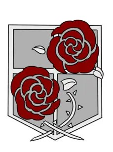
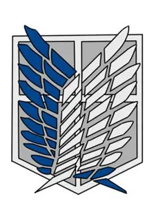

L'Armée de l'île de Paradis est la force militaire essentielle à la survie de la nation contre la menace des Titans. Ses membres, motivés par des idéaux de liberté et de protection, œuvrent pour garantir la sécurité de leur peuple tout en affrontant des menaces internes et externes.
Nos missions
- Protection des Citoyens : L'une des missions primordiales de notre armée est de protéger nos concitoyens. Cela inclut des patrouilles régulières et des interventions rapides lors d'attaques de Titans.
- Exploration et Reconnaissance : L'Armée mène des missions d'exploration au-delà des murs, visant à collecter des informations sur le monde extérieur et à comprendre les véritables enjeux qui menacent nos existences.
- Lutte contre les Titans : La lutte contre les Titans est au cœur de nos actions. Chaque mission est planifiée avec soin pour maximiser l'efficacité dans le combat, utilisant des stratégies innovantes et des technologies avancées.
- Maintien de l'Ordre : L'Armée joue également un rôle crucial dans le maintien de l'ordre à l'intérieur des murs. Cela implique de gérer les conflits internes et d'assurer la cohésion sociale face aux crises.
Nos valeurs
- Liberté : Au cœur de nos missions se trouve la quête de liberté. Nos soldats sont animés par le désir de libérer l'humanité de la peur et de la tyrannie des Titans, symbolisant un combat pour l'émancipation.
- Sacrifice : L'Armée prône le sacrifice personnel pour le bien commun. Les soldats sont prêts à donner leur vie pour protéger leurs camarades et leur patrie, illustrant un sens du devoir profond et une solidarité inébranlable.
- Courage : Confrontés à des dangers inimaginables, le courage est une valeur fondamentale. Les membres de l'Armée font preuve d'une bravoure exceptionnelle, se lançant dans des batailles pour défendre ce en quoi ils croient.
Les différents corps d'armée

La garnison
Elle s'occupe de tous les conflits internes et de la protection des murs face aux attaques des titans

Le bataillon d'exploration
Le bataillon d'exploration part en dehors des murs pour explorer les terres et planifier d'éventuelles reconquêtes de territoires occupés par les titans.